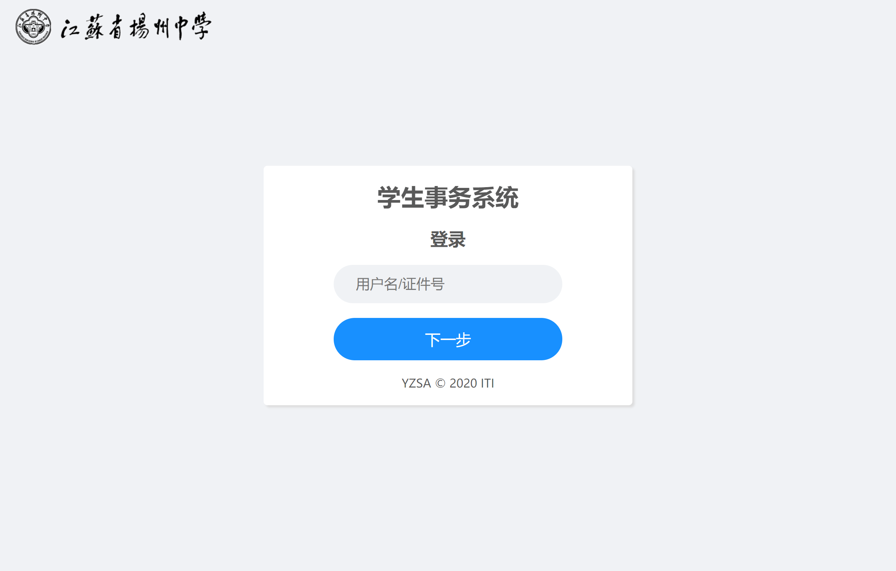
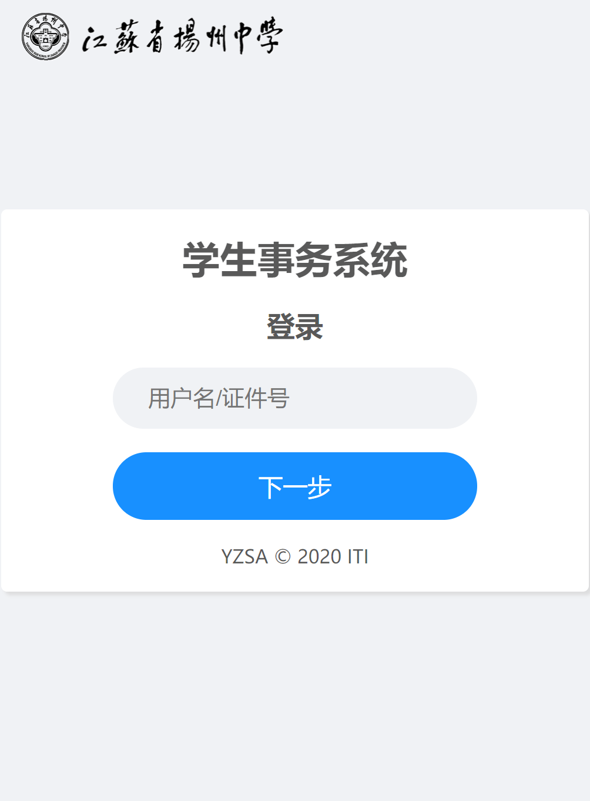
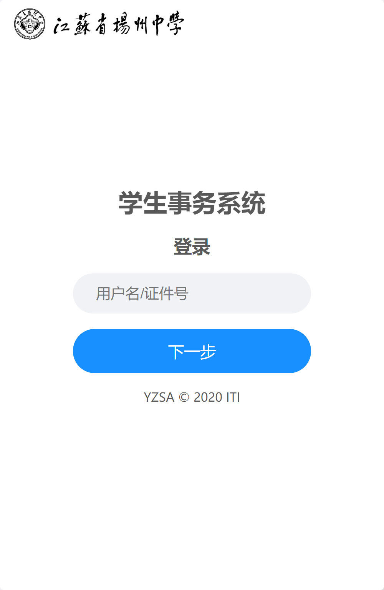
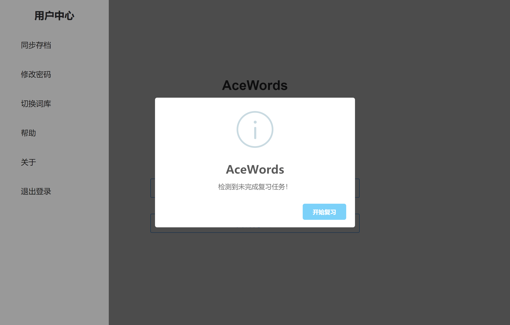
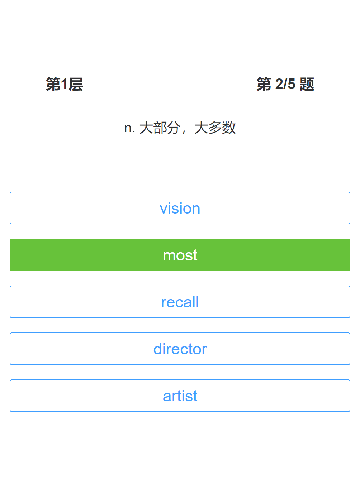
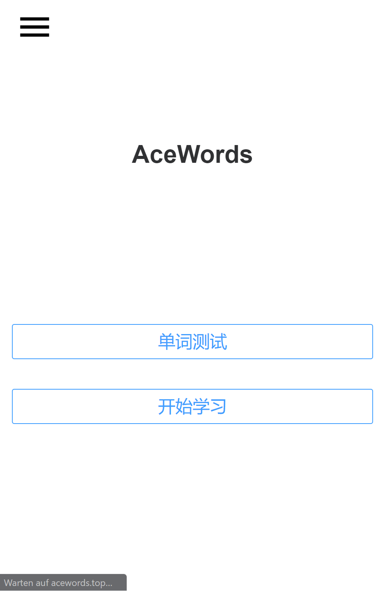
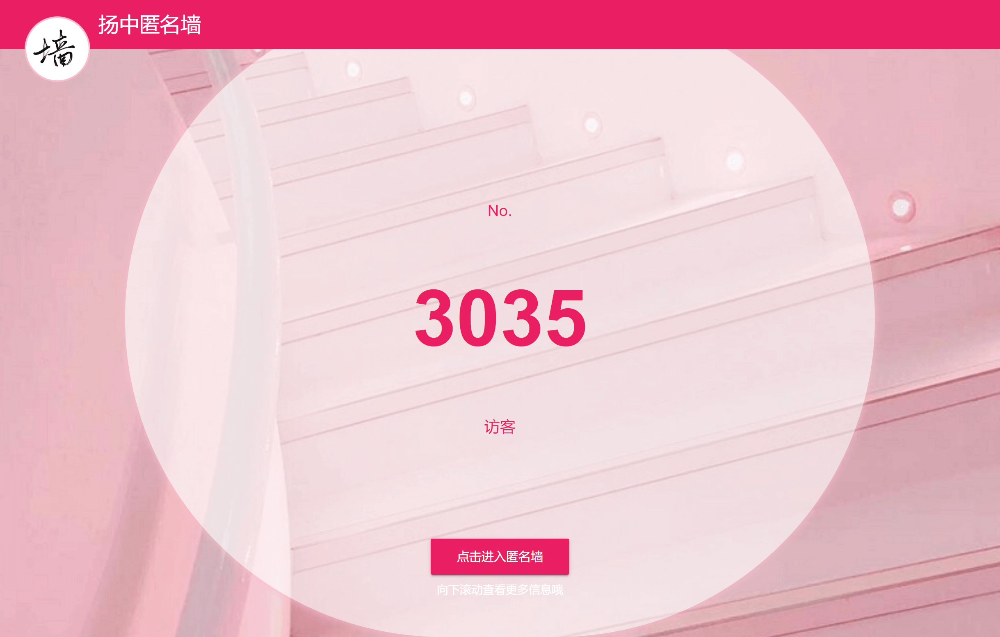
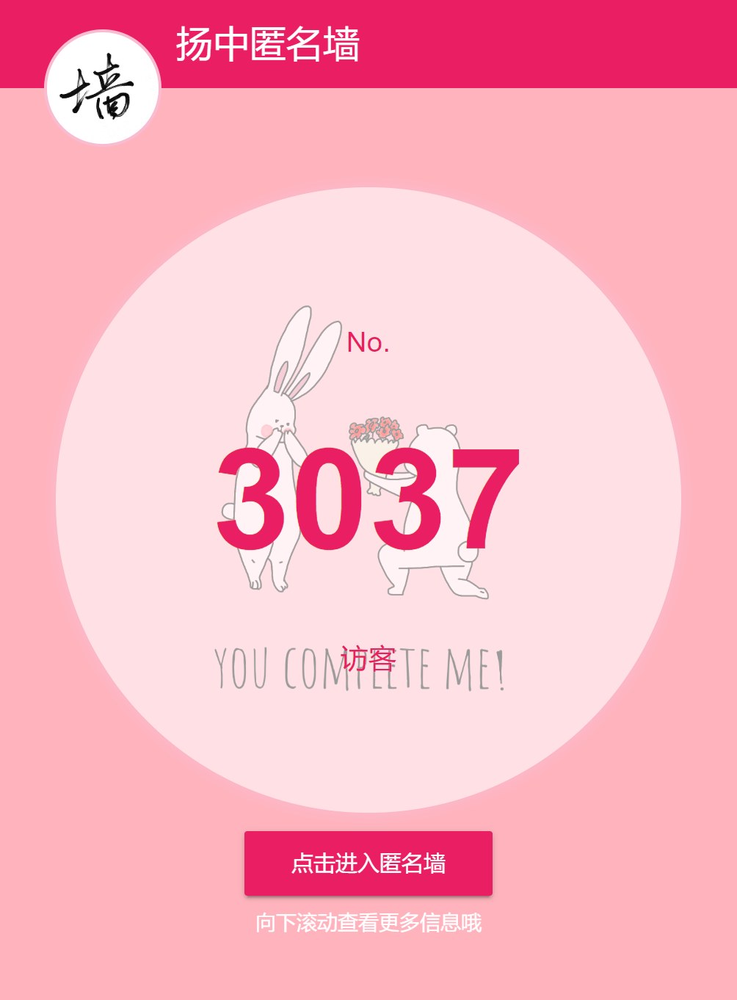
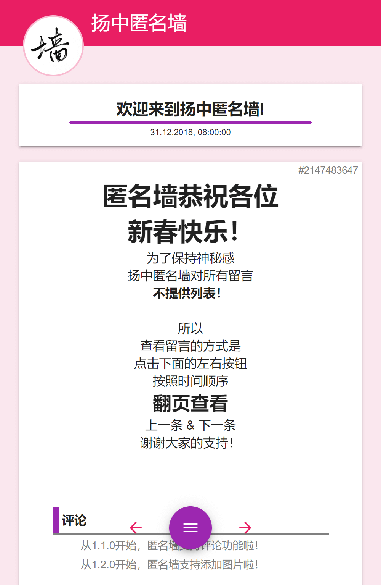

学生事务系统
江苏省扬州中学学生事务系统（YZSA），是一款任务化、模块化，支持分布式部署，高效简明的学生事务平台，用于学校学生选课、问卷和通知等事务。它解决了选课卡顿卡死、应用页面太多太杂的问题，凭借杰出的页面设计和丰富多样的管理工具，帮助学校老师和同学们快速完成日常事务，帮助学校完成信息化建设。
AceWords
AceWords是一款先进的背单词应用，支持多语言词库。优化的记忆算法使它能够显著提高记忆效率，节约记忆时间。特殊的单词测试方法更具有别样的乐趣。存档可以在云端存储，单词学习进度可以在多个设备之间同步。一起来学习吧！






扬中匿名墙
扬中匿名墙是ITI团队的一个实验性项目。团队成员的学习使用多样的web程序建设方案，与扬中表白墙合作建设的一个匿名发布墙。发布内容通过墙君的审核即可被所有人看到。目前已经支持多文本样式的内容和图片上传，同时还支持了回复功能。用户无需登录即可发布、查看和回复匿名墙上的留言。
ITIOJ
ITIOJ是江苏省扬州中学信息竞赛团队的专用在线测评系统，部署并配置了先进的开源OJSYZOJ（LOJ的测评系统），支持大量编程语言，具有精简优美的UI界面和卓越的测评性能，帮助越来越多的萌新在扬中成长为神犇！